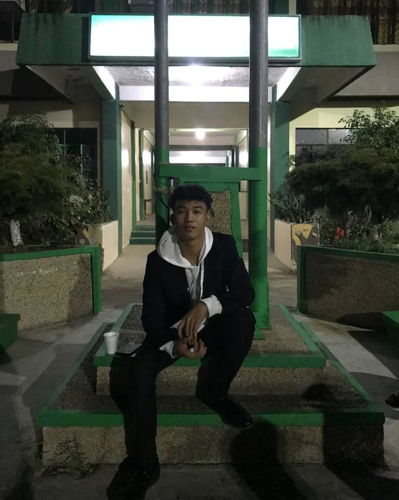

Portfolio
Mhar Vincent D. Abobo

Mark Joshua M. Borromeo

A passionate IT student with a flair for creativity, Abobo Mhar Vincent D. is carving out a niche in the world of videography and photography. His technical expertise and artistic vision come together seamlessly, allowing him to excel in video and photo editing.
With a keen eye for detail and a drive for perfection, Abobo is dedicated to capturing moments and crafting compelling narratives through his lens. His enthusiasm extends to local event production, where he brings a unique blend of technical skill and creative insight to make every event memorable.
Whether behind the camera or behind the scenes, Abobo is committed to delivering high-quality content and exceptional experiences. Keep an eye out for his work—you won’t want to miss it!
Playing online games has become one of my favorite pastimes. For me, Mark Joshua M. Borromeo, it's a fantastic way to relax and take a break from my daily routine. Whether I'm waiting for something or just need a quick escape from the stresses of life, the convenience of online gaming allows me to dive into different worlds and adventures no matter where I am. It's the perfect way to unwind and enjoy some downtime, fitting seamlessly into my schedule.
Watching movies is another cherished way for me to relax, especially after a long day. There’s something truly special about getting lost in a different world, whether it's through a thrilling action-packed film or a deeply moving drama. I relish the process of selecting a movie, preparing some snacks, and settling in for a complete cinematic experience. It’s a wonderful escape from studying or other responsibilities, offering a chance to recharge and have some fun.